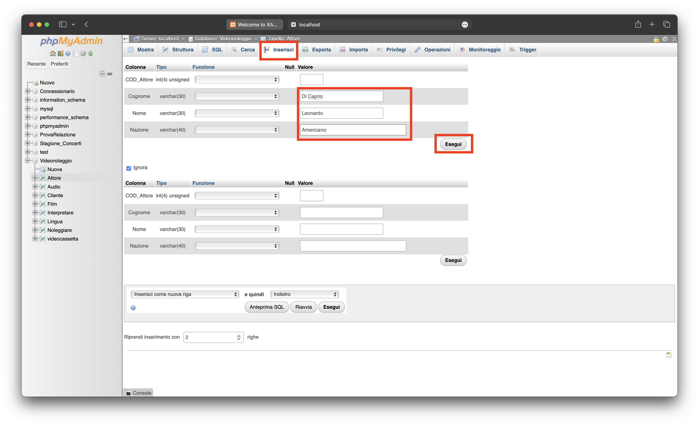

Inserimento dei record
Una volta che le tabelle sono state create, è possibile procedere con l'inserimento dei record. Per iniziare, fare clic sul nome della tabella in cui si desidera inserire i record. Successivamente, premere su "Inserisci" nella parte superiore e inserire i valori desiderati. Infine, premere su "Esegui". Nota che il campo "Codice" deve essere lasciato vuoto in quanto è stato dichiarato con l'attributo "auto_increment", il quale assegnerà automaticamente un valore incrementale al codice del record.
Per avere una stampa dei dati inseriti, basta premere sulla tabella che si vuole vedere e premere sulla voce “Visualizza per stampa”.In questo modo verrà stampata una vista logica con i record inseriti :